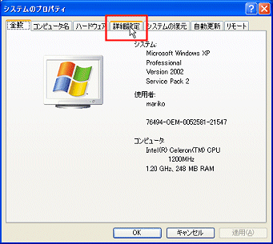
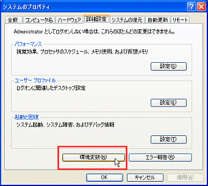
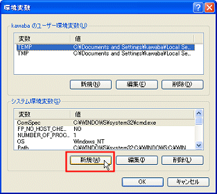
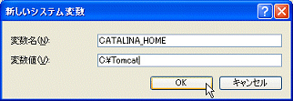
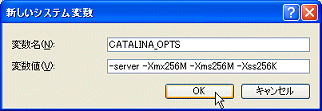
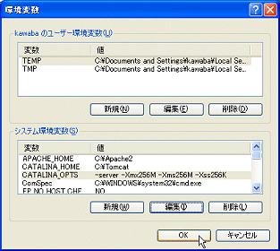

環境変数の設定
環境変数とは、プログラムに与える情報をあらかじめ設定しておくための仕掛けです．環境変数に変数名とその値を設定しておくことで、プログラムはそれを簡単に取得できるのです．PowerCampusではウェブサーバーなどのプログラムの所在や、実行時におけるメモリーの割り当てなどを環境変数に設定しておく必要があります．
環境変数の設定画面を開く
以下の手順で環境変数設定画面を開きます．
(1) コントロールパネルを開く
(2) をクリックする
(3) をクリックする
(4) 右図の画面になるので 詳細 タブをクリックする

(5) 詳細設定をクリックする
(6) 環境変数 をクリックする

環境変数の設定
新規 をクリックして、４つの環境変数を以下のように登録してください．つまり、新規－登録 の処理を４回繰り返します．
全て手入力となりますので、字の間違いがないことをよく確かめ、注意深く入力してください．
なお、変数の値は、apache,j2sdk,tomcatのインストール例の通りにインストールを実行した時のものです．インストール先を任意に変更した場合は、対応する値も変更してください．

apacheの所在
変数名： APACHE_HOME
値 ： c:\Apache2
javaの所在
変数名： JAVA_HOME
値 ： c:\java
tocmatの所在
変数名： CATALINA_HOME
値 ： c:\Tomcat

tomcatの起動パラメータ
変数名： CATALINA_OPT
値 ： -server -Xmx
256
M -Xms
256
M -Xss256K
ただし、青字の数字は、パソコンの搭載メモリ量のおおむね半分程度の値とします．例えば上はメモリーを512MB搭載したパソコンの例です．各自、自分のパソコンの搭載メモリー量を調べて適切に設定してください．設定が誤っていると動作不全の原因となるので、十分気をつけてください．

完了
全て設定したら、OK をクリックして終了します．

 環境変数の設定画面を開く
環境変数の設定画面を開く
 環境変数の設定
環境変数の設定
 javaの所在
javaの所在
 tocmatの所在
tocmatの所在
 tomcatの起動パラメータ
tomcatの起動パラメータ
 完了
完了